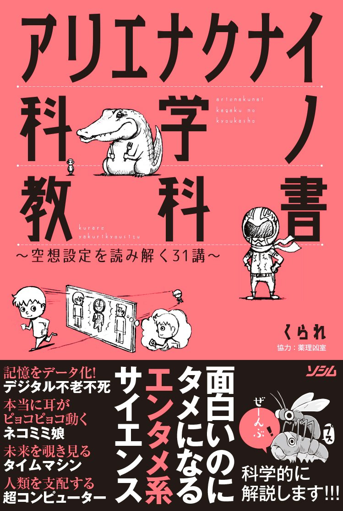

アリエナクナイ科学ノ教科書
概要
「不老不死の存在」「人造人間」「巨大モンスター」「ナノマシン」などなど、マンガやアニメやゲームなどでお馴染みの存在ながら
現実ではお目にかかれない存在の数々。そんな空想世界の技術・設定を現代科学で読み解くと……?

感想
元々くられが好きだったので購入。科学に少しでも興味がある人なら必ず楽しめる一冊。
くられはほかにも様々な本を執筆しているが、この本が断然わかりやすい内容になっている。